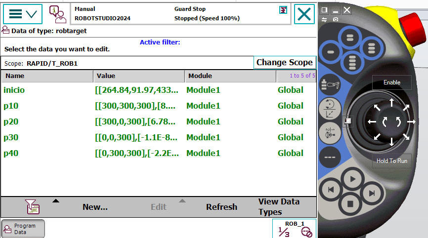
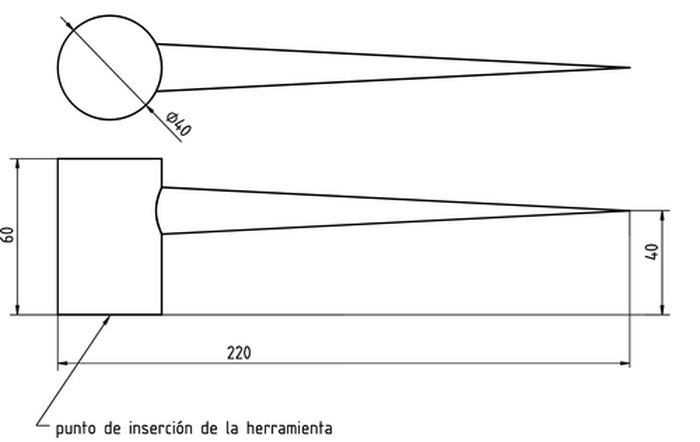
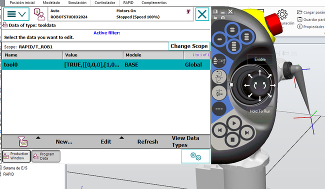
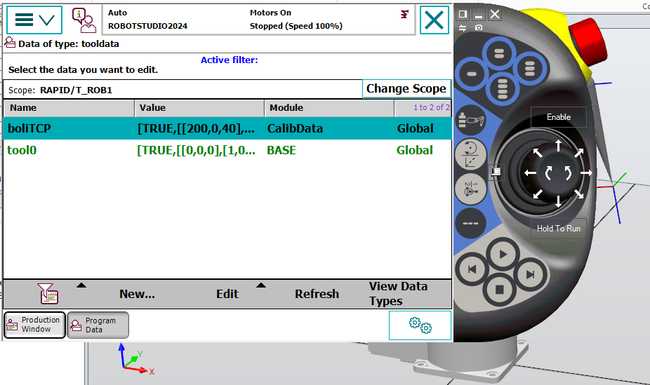
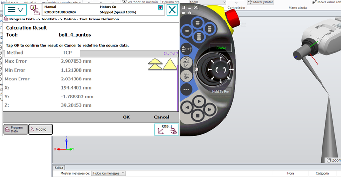

PRÁCTICAS DE ROBOTICA
 Temario
Temario
 Prácticas
Prácticas
 Videos
Videos Migas de pan
Migas de pan
Colocación de objetos en robotstudio.
Crea una estación vacía
Inserta
- un robot 120
- un soporte de 400*200 y altura 100
- coloca el robot encima de soporte
- Inserta una controladora y una flexpendal. Colócala en un sitio adecuado en el espacio de trabajo
crea otro soporte de 300*400*400, desplazado 300cm en dirección X
y en el centro del soporte coloca un cono de diámetro 50 y altura 100
NOTA: Una contralodra IRC puede controlar 4 brazos manipuladores.
INICIO
Crea una herramienta
Dibuja un tetraedro de longitud 200 anchura 400 altura 50Un hexágono circunscrito en una circunferencia de 50 y altura 50
Un cono de diámetro 150 altura 300
Un tubo con diámetro exterior 150 y diámetro interior 100 altura 200
Traslada el hexágono al centro del tetraedro
Mueve el tubo a 100-75-50
Mueve el cono a 100-325-50
Crea una pieza vacía con el nombre herramienta que contenga todos los cuerpos renombrados a base, tubo tuerca, puntero
Posiciona los ejes el centro de la base
Haz coincidir el eje de la pieza con eje mundo
Crea una herramienta con el nombre propia de peso 500gr con dos tcp una en la punta del cono llamado puntero Y otro creado en el centro de la parte superior del tubo llamado tubo
Inserta el robot y colócale la herramienta
Instala la controladora y mueve robot según tcp del cono y mueve el robot según el tcp del tubo)


INICIO
Crea un WorkObject 2024
Crea una instalación vacia, incorpora
- - un robot IRB120
- - Un controlador
- - La herramienta mytool
- - Un cubo de 300*300*300, con el nombre pieza1
- - Un cubo de 200*200*200, con el nombre pieza2
- - Desplaza la pieza1 a 250, -150,0
- - Desplaza la pieza2 a 150,-300,0
- - Crea un objeto de trabajo, llamado objeto1
- - Crea un objeto de trabajo, llamado objeto2
- - Conecta la pieza1 con el objeto de trabajo objeto1
- - Conecta la pieza2 con el objeto de trabajo objeto2
Selecciona el workobject, botón derecho -> conectar y seleccionar la pieza deseada.
Cuando muevas las pieza, también se movera el Wobject conectado a la pieza y los puntos refereridos al Wobject
-
Crea los siguientes puntos
- - Punto INICIO, en la posición inicial del robot relativo al WObj0
- - 4 puntos coincidentes con la esquinas de la cara superior de la pieza1 relativo al objeto de trabajo objeto1
- - 3 puntos coincidentes con la esquinas de la cara superior de la pieza2 relativo al objeto de trabajo objeto2
-
Crea las siguientes trayectorias
- -Desde el punto de inicio, que recorra las 4 esquinas de la pieza1 y vuelva al punto de inicio
- -Desde el punto de inicio, que recorra las 3 esquinas accesibles de la pieza2 y vuelva al punto de inicio
- - Una trayectoria main (todo en minusculas) que incluya las dos trayectorias anteriores
Simula las trayectorias añadiendo una colisión entre mytool y las piezas 1 y 2 y graba la simulación de la trayectora main
Desplaza la pieza1 y el objeto de trabajo objeto1 una distancia sufiente para que el robot no choque con la pieza1, graba la simulación de la nueva trayectoria
Guarda el proyecto, empaquetalo en pack and go y envía las simulaciones grabadas y la estación empaquetada.
Al sincronizar la estación con RAPID podemos ver los workobjet (objetos de trabajo) en el archivo calib data
Video de como mover un Wobject y sus puntos referenciados, moviendo la pieza
CalibData
Module1
INICIO
WorkObject y sistemas de coordenadas 2024
Creación de un workobject desde la estación y exportarlo al controlador virtual.
Desde la estación, hemos creado un brazo robotico IRB120 con su controladora y le hemos insertado la herramienta mytool, también se ha creado un cubo de lado 300, y se ha desplazado 300mm en dirección del eje X y -150 mm en dirección de eje Y y un WorkObject con el nombre estación_basecubo que tiene su origen de coordenadas en el punto (300,-150,0) que coincide con un vertice del cubo. Despues creamos los puntos inicio, que coincide con la posición inicial del brazo, y los puntos p10, p20,p30, p40 que coinciden con los vertices de la cara superior del cubo.
Posición del Workobject.
En primer lugar vemos el punto P10 con respecto a su eje local ( el mismos). El valor siempre sera (0, 0, 0), podemos utilizar esta referencia para mover el punto con una distancia respecto el mismo.
Si la referencia la tomamos respecto el objeto superior ( workobject estacion_basecubo) vemos la nuevas coordenas.
Nota: El punto P10 puede estar referenciado a distinstos sistemas referencia. Los sistemas de referencia tienen una gerarquia que de mayor a menor seran:
Mundo -> objeto superior ( el workobject del punto) -> punto que sera (0, 0, 0)
Si la referencia la tomamos respecto a Mundo vemos la nuevas coordenas.
Nota: Tambien podemos observar que los ejes del punto están girados respecto a los sistemas de coordenadas Mundo y workobject. Esto es debido a que los puntos se crearon desde la flexpendant.
Sincronizamos la estación con el contralador virtual o RAPID, abrimos la flexpendant y datos de programa -> Wobjdata vemos dos sistemas de referencias:
- El mundo con el nombre Wobj0 y sus datos están almacenados en el MODULO BASE.
- estacion_basecubo, creado por nosotros y guardado en el MODULO
CalibData
En datos de programa, ROBTARGET vemos que los puntos p10, p20, p30, p40 estan referenciados al sistema de coordenadas de nuestro workobject estación_basecubo.
El punto de inicio esta referenciado respecto el sistema de coordenadas mundo.

En el programa, vemos que los puntos donde se encuentra Mytool estan referenciados a al workobject
y queda reflejada en la instrucción de movimiento.
p10 marcado por TCP de Mytool esta en la posición (300, 300, 300) respecto el workobject data (estación_basecubo)
Modificación del workobject "estacion_basecubo" desde la flexpendant
subimos el eje Z 30mm
y con la flexpendant en la pantalla movimiento (jogging) vamos al punto p10 y vemos que ahora el punto esta 30 mm mas arriba.
Creación de un workobject desde la flexpenant, introduciendo valores
Trayectoria
Crea una estación con dos objetos, un cubo de 200mm y otro un cubo de 200mm al que se la ha añadido un medio cilindro.coloca el robot en la posición inicial, y crea un punto en esa posición con referencia al robot.
Crea dos trayectorias una que recorra el cubo con una base de coordenadas llamada cubo y otra que recorra la cubo con el cilindro con otra base de coordenadas llamada cubo curvado.
haz que el robot pase exactamente por dos puntos del cubo y reduce a 100 mm/s en dos tramos.
Graba la animación donde el robot parte de la posición inicial, recorre primero el cubo vuelve a la posición inicial, luego el recorre el cubo curvado y termina en la posición inicial.
Mueve la base de coordenadas del cubo curvado y graba la animación donde el robot parte de la posición inicial, recorre primero el cubo curvado vuelve a la posición inicial, luego el recorre el cubo y termina en la posición inicial.
Entrega los dos videos.
Ejemplo resuelto realizado por los alumnos
Trayectorias con referencia a objetosBase de coordenadas desplazada
PROPUESTA
Crea una instalación vacio, incorpora- - un robot IRB120
- - Un controlador
- - La herramienta mytool
- - Un cubo de 300*300*300, con el nombre pieza1
- - Un cubo de 200*200*200, con el nombre pieza2
- - Crea un objeto de trabajo, llamado objeto1
- - Crea un objeto de trabajo, llamado objeto2
- - Desplaza la pieza1 a 250, -150,0
- - Desplaza la pieza2 a 150,-300,0
- Crea los siguientes puntos
- - Punto INICIO, en la posición inicial del robot relativo al WObj0
- - 4 puntos coincidentes con la esquinas de la cara superior de la pieza1 relativo al objeto de trabajo objeto1
- - 3 puntos coincidentes con la esquinas de la cara superior de la pieza2 relativo al objeto de trabajo objeto2
- Crea las siguientes trayectorias
- -Desde el punto de inicio, que recorra las 4 esquinas de la pieza1 y vuelva al punto de inicio
- -Desde el punto de inicio, que recorra las 3 esquinas accesibles de la pieza2 y vuelva al punto de inicio
- - Una trayectoria main (todo en minusculas) que incluya las dos trayectorias anteriores
Simula las trayectorias y graba la simulación de la trayectora main
Desplaza la pieza1 y el objeto de trabajo objeto1 una distancia sufiente para que el robot no choque con la pieza1, graba la simulación de la nueva trayectoria
Guarda el proyecto, empaquetalo en pack and go y envía las simulaciones grabadas y la estación empaquetada.
INICIO
Trayectoria con flexPendant
Realiza una trayectoria con flexPendant que recorra aproximadamente las 4 esquinas de cada caja sin tocar la pared intermedia.

Ejemplo resuelto realizado por los alumnos
Trayectorias con flexpendantINICIO
RAPID
Crea una pieza con un hexágono de altura 200mm y un cilindro de altura 300 mm.
Con la herramienta tool haz que el robot:
Parta de posición de inicio, se acerque al vértice 1 a una velocidad de 1000 y con una precisión de 100,
coloca la herramienta de forma que no este perpendicular a la base del hexágono vaya al vértice 2 con una velocidad de 250 y que la herramienta toque el vértice y se pare 1 segundo,
coloca la herramienta de forma que este perpendicular a la base del hexágono vaya al vértice 3 con una velocidad de 250 y que la herramienta toque el vértice y se pare 1 segundo,
coloca la herramienta de forma que este perpendicular a la base del hexágono vaya al vértice 1 a una velocidad de 1000 y con una precisión de 100,
coloca la herramienta de forma que no este perpendicular a la base del hexágono vaya al cilindro y recorra 3 puntos del cilindro con precisión cero con un movimiento curvo y una velocidad de 500 mm/s vaya a la posición de inicio
y repita el tantas veces como este indicado en una variable llamada ciclos, ( valor de la variable ciclos=3)
inserta un comentario después de cada parada que ponga REALIZACIÓN DE SOLDADURA.
Envía el video del funcionamiento del programa, y la parte de programación module1 con extensión txt

Ejemplo resuelto realizado por los alumnos
RAPIDINICIO
TCP con flexpendant
Diseña en robotstudio un objeto con las medidas de la herramienta real rotulador de nuestro robot IRB120. En robotstudio conecta el objeto al robot y desde la flexpendant crea la herramienta.
Desde la flexpendant del robot real, crea una herramienta, identificala con tu nombre, dala un peso de 100gr, ponla un centro de gravedad aproximado y desde definir crea con 4 puntos el TCP de la herramienta.
Observa el error de creación del TCP, y compara los los valores del TCP de la herramienta obtenido a partir de la medición con el TCP obtenido por el método definir.
Convierte en robotstudio el objeto rotulador a herramienta rotulador con los valores del TCP, que mejor funcionamiento haya tenido en el robot, guarda la herramienta en la biblioteca de robot estudio con el nombre rotulador, envía los valores TCP junto con una imagen del robot con la herramienta.
Ejemplo resuelto realizado por los alumnos

INICIO
TCP con flexpendant 2024
Diseña en robotstudio o con otro programa de 3D un objeto con las medidas de la herramienta real rotulador de nuestro robot IRB120. 
En el este enlace encontraras la pieza realizada con freecad de la siguiente manera
- cilindro de diámetro 40 altura 60
- Un cono de diámetro 20 altura 200, gira 90 grados frente al eje y, subirlo con z=40mm
Abrir Robotstudio y arrastrar el archivo STL a robotstudio
Creo una herramienta a partir del objeto con un peso 100gr cdg z=40 x=40 y un tcp (200,0,40)
Al conectarlo al robot observo que el eje Z del TCP no es correcto
Tendre que rotarlo 90º respecto el eje Y
Vuelvo a crear la herramienta con los siguientes datos del TCP
Ahora si que esta colocado correctamente el TCP
Incorporo la herramienta al robot estudio y pruebo movimientos de reorientación
El TCP en la flexpendat
Abrimos la flexpendant y vemos que no tenie ninguna herramienta incorporada, solo aparace la brida, tool0
Sincronizo la estación con RAPID, reinicio la flexpendant, y veo que se ha incoporado la herramienta

y vemos los valores del TCP
En RAPID -> Módulos de programa -> Calib Data vemos los datos de la herramienta creada
Valores del TCP obtenido por el metodo de 4 puntos

VALORES DEL TCP DE MYTOOL
Valores del TCP dados por Robotstudio.Valores del TCP de MyTool obtenido por el metodo de 4 puntos
INICIO
Crear una trayectoria con flexpendant
Crear con la herramienta rotulador y desde la flexpendant de robotstudio primero y luego desde la flexpendant real la siguiente trayectoria:
Desde la posición inicial ( posición de calibración con el eje 5 girado hacia abajo),con la herramienta rotulador, el robot toca una esquina de una caja, se levanta, para dirigirse otra esquina, se levanta para dirigirse a la tercera esquina, se levanta y se dirige a la cuarta esquina, y vuelve a la posición inicial.
Velocidad 200mm/s aproximación 0.
Envía el archivo grabado desde grabar en visor de la trayectoria donde con el rastreo TCP activado.
Ejemplo resuelto realizado por los alumnos
Trayectorias con flexpendantINICIO
Trayectoria N-L 2024
Realiza el programa con la flexpendant, que dibuje una N,vuelva a la posición inicial espere un segundo y dibuje una L con la herramienta myTool, sobre un cubo de 300mm situado de forma simétrica a 300 mm de la base del manipulador.
La herramienta myTool debe de estar colocada perpendicularmente al cubo al realizar el dibujo.
Los puntos deben de estar referenciados al TCP de la herramienta.
Utiliza "incrementos" para afinar los puntos del cubo.
Utiliza la ejecución del programa desde la flexpendant,
- Utiliza la ejecución del programa desde la flexpendant,
- Paso a paso, hacia adelante.
- Pasos a paso, hacia atrás.
Utiliza la opción ir A para ir a los puntos
Trayectorias N - LINICIO
Programación con flexpendant
Realiza con la flexpendant de robot estudio un programa que desde la posición de inicio Toque una esquina de la caja durante 1 segundo. Vuelva a la posición inicial. Toque otra esquina durante 2 segundos.
Y repita el ciclo 3 veces (utiliza variables para repetir el ciclo).
Velocidad 100 mm/s
Movimiento J
Ajuste fine.
Ejemplo resuelto realizado por los alumnos
Programación con flexpendantINICIO
4 Taladros en un cubo 2024
Crea un tetraedro de longitud 300mm, anchura 400mm y altura 200mm, trasládalo a una distancia de 300mm de la base de robot, crea 4 orificios pasantes de 12mm de diámetro a un distancia de 20mm de los bordes. llama a la figura creada guía.
Crea otro tetraedro de 320mm, anchura 420mm y altura 175mm, y sitúalo de forma que sobresalga 10mm por los lados. Llama a la figura objetivo
Crea un programa que vaya de la posición inicial, entre en un orificio toque la figura objetivo durante 2 segundos sin tocar la figura guía, salga y vuelva a hacer la misma operación en los tres orificios restantes, vuelve a la posición inicial y desde esta posición en 5 segundos toque el centro de la figura guía sin tocar la figura objetivo.
- Nota:
- Velocidad de robot 200mm/s
- Todos los puntos salvo el inicial deben de estar referenciados a un workobject llamado WO_objetivo situado en la esquina inferior derecha de la figura objetivo desde el punto de vista del robot.
- A producirse una colisión deben de cambiar de color las piezas que colisionan
-
Debes de enviar un video de la simulación, el programa rapid (module1 y calibdata) y el archivo pack and go
Ejemplo resuelto realizado Mario Sobradillo
4 taladros en un cuboEjemplo resuelto realizado Mario Sobradillo
4 taladros en un cuboEjemplo resuelto realizado Sergio Sanchez
4 taladros en un cuboINICIO
Programación y trayectoria
Realiza con la flexpendant con robot estudio, un programa que desde la posición de inicio escriba una I vuelva a la posición de inicio, este 2 segundos, escriba O vuelva a la posición de inicio.
Velocidad 100 mm/s
Ajuste fine.
Ejemplo resuelto realizado por los alumnos
Programación con flexpendant y trayectoriaINICIO
Instrucciones Rapid
Realiza con la herramienta lápiz, una N, y mediante programación Rapid , tiene que repetir dos veces la trayectoria. realiza el incremento mediante:
suma
add
incr
Poner a cero
asignar valor
clear
Observa el comportamiento de la variable en OBSERVACIÓN DE RAPID
Ejemplo resuelto realizado por los alumnos
Instrucciones RAPIDINICIO
Cargar un programa RAPID en IRB120
Graba el programa RAPID creado en la practica anterior y cárgalo en la flexpendant de nuestro robot, con el nombre p22NOMBRE (práctica 2 evaluación 2 práctica comprueba la desviación del "tablero de escritura" realizado con robot estudio y el real, borra la práctica de la flexpendant y modifica la altura del WOBJ_caja para que el robot real escriba la N sobre su tablero, vuelve a repetir el proceso de cargar y borrar el programa RAPID en el robot.
La práctica se realiza en grupo de dos, en la primera parte cargara el programa un alumno del grupo y en la segunda el otro alumno.
INICIO
Proyecto
Coloca la hoja con los 5 puntos en la mesa del robot. Desde la flexpendant , crea la herramienta puntero, y realiza un programa que cree una trayectoria que recorra los puntos inicio, punto 1, puntos 2, punto 3, punto 4 y punto 5. En todos los puntos la herramienta debe de estar alineada con el eje Z. Graba el programa en un USB.
Desde el ordenador realiza los path N, M, L, U, Z y una trayectoria desde el punto de inicio al punto 1, inicio, punto 2, inicio, punto 3 y finalmente inicio. Y crea un programa que escriba en la pantalla de la flexpendant la instrucción " Introduce un cero para la trayectoria 123, un uno para dibujar una M, un dos para una N, un tres para una L, un cuatro para una U y un cinco para una Z", si el numero introducido es mayor que 5, borrara la pantalla y te indicara durante 3 segundos " El numero seleccionado no esta entre 0 y 5" borra la pantalla y vuelve a aparecer la instrucción.
Si el numero esta entre 0 y 5, la pantalla de la flexpendant mostrara " Escribiendo la letra ___"mientras este trabajando el robot
A terminar el robot vuelve a la posición inicio y a repetir el ciclo.
INICIO
Instrucción FOR y WHILE
Añade a la práctica anterior la pregunta "Entre 1 y 4,cuantas veces quiere que remarque la letra seleccionada" si el número introducido esta entre 1 y 4 el robot dibuja la letra el numero de veces que seleccionado, borra la pantalla y vuelta a comenzar, si es el numero no esta entre 1 y 4, borra la pantalla y vuelta a comenzar. realiza esta última parte del programa con al instrucción WHILE.
Ejemplo resuelto realizado por los alumnos
Instrucciones FOR WHILEINICIO
Esquema eléctrico entradas salidas
Crea una instalación con 8 entradas y 8 salidas.
esquema eléctrico de entradas y salidas APILAR
Programa y realiza un esquema eléctrico de la instalación del robot, conectado con una herramienta ventosa, que apila piezas, una encima de otra, El robot comienza a apilar las piezas cuando pulsamos en la flexpendant la tecla programable 1, y apila piezas hasta que detecte que al ir a recoger una pieza no hay ninguna entonces se para en la posición inicial a la espera de volver a pulsar la tecla programable 1.
Ejemplo resuelto realizado por los alumnos
Esquema entradas salidas ApilarINICIO
Proyecto: Creación de una instalación virtual en Robot Studio
Se valorará :
La utilización de dos robot.
Utilización de nuevos componentes.
Ayuda:
Se ha creado un espacio colaborativo en Block de notas de clase.
con la publicación un enlace a un video para crear una cinta transportadora
Video ejemplo
INICIO
INICIO